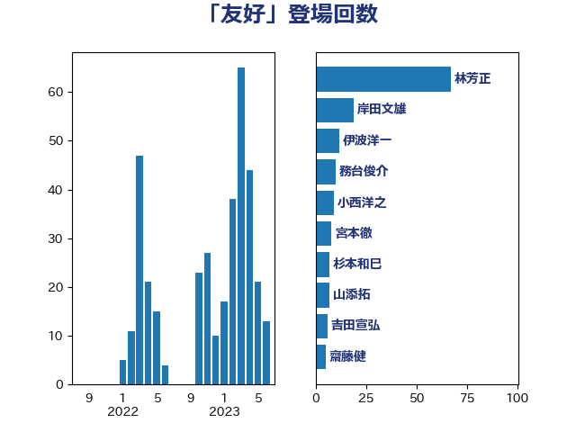

単語「友好」

| 林芳正 | 自由民主党 | 67 回 |
| 岸田文雄 | 自由民主党 | 19 回 |
| 伊波洋一 | 無所属 | 12 回 |
| 務台俊介 | 自由民主党 | 10 回 |
| 小西洋之 | 立憲民主党 | 9 回 |
| 宮本徹 | 日本共産党 | 8 回 |
| 杉本和巳 | 日本維新の会 | 7 回 |
| 山添拓 | 日本共産党 | 7 回 |
| 吉田宣弘 | 公明党 | 6 回 |
| 齋藤健 | 自由民主党 | 5 回 |
| 西村康稔 | 自由民主党 | 5 回 |
| 榛葉賀津也 | 国民民主党 | 5 回 |
| 山田賢司 | 自由民主党 | 5 回 |
| 山下芳生 | 日本共産党 | 5 回 |
| 金城泰邦 | 公明党 | 4 回 |
| 羽田次郎 | 立憲民主党 | 4 回 |
| 斉藤鉄夫 | 公明党 | 4 回 |
| 徳永久志 | 無所属 | 4 回 |
| 井上哲士 | 日本共産党 | 4 回 |
| 金子道仁 | 日本維新の会 | 3 回 |
| 赤嶺政賢 | 日本共産党 | 3 回 |
| 葉梨康弘 | 自由民主党 | 3 回 |
| 萩生田光一 | 自由民主党 | 3 回 |
| 舟山康江 | 国民民主党 | 3 回 |
| 山口晋 | 自由民主党 | 3 回 |
| 小渕優子 | 自由民主党 | 3 回 |
| 小池晃 | 日本共産党 | 3 回 |
| 古川禎久 | 自由民主党 | 3 回 |
| 下条みつ | 立憲民主党 | 3 回 |
| 三木圭恵 | 日本維新の会 | 3 回 |
| 音喜多駿 | 日本維新の会 | 2 回 |
| 長妻昭 | 立憲民主党 | 2 回 |
| 鈴木貴子 | 自由民主党 | 2 回 |
| 赤澤亮正 | 自由民主党 | 2 回 |
| 源馬謙太郎 | 立憲民主党 | 2 回 |
| 清水貴之 | 日本維新の会 | 2 回 |
| 沢田良 | 日本維新の会 | 2 回 |
| 平木大作 | 公明党 | 2 回 |
| 小熊慎司 | 立憲民主党 | 2 回 |
| 大塚耕平 | 国民民主党 | 2 回 |
| 和田有一朗 | 日本維新の会 | 2 回 |
| 伊藤岳 | 日本共産党 | 2 回 |
| 高橋光男 | 公明党 | 1 回 |
| 高橋はるみ | 自由民主党 | 1 回 |
| 青山繁晴 | 自由民主党 | 1 回 |
| 青山大人 | 立憲民主党 | 1 回 |
| 鈴木敦 | 国民民主党 | 1 回 |
| 野中厚 | 自由民主党 | 1 回 |
| 重徳和彦 | 立憲民主党 | 1 回 |
| 逢坂誠二 | 立憲民主党 | 1 回 |
| 谷田川元 | 立憲民主党 | 1 回 |
| 谷合正明 | 公明党 | 1 回 |
| 西村智奈美 | 立憲民主党 | 1 回 |
| 荒井優 | 立憲民主党 | 1 回 |
| 美延映夫 | 日本維新の会 | 1 回 |
| 福岡資麿 | 自由民主党 | 1 回 |
| 石川大我 | 立憲民主党 | 1 回 |
| 矢倉克夫 | 公明党 | 1 回 |
| 田中健 | 国民民主党 | 1 回 |
| 牧原秀樹 | 自由民主党 | 1 回 |
| 渡辺猛之 | 自由民主党 | 1 回 |
| 渡辺周 | 立憲民主党 | 1 回 |
| 渡辺創 | 立憲民主党 | 1 回 |
| 浅野哲 | 国民民主党 | 1 回 |
| 津島淳 | 自由民主党 | 1 回 |
| 泉健太 | 立憲民主党 | 1 回 |
| 河西宏一 | 公明党 | 1 回 |
| 永岡桂子 | 自由民主党 | 1 回 |
| 武部新 | 自由民主党 | 1 回 |
| 武井俊輔 | 自由民主党 | 1 回 |
| 櫻井周 | 立憲民主党 | 1 回 |
| 梅村聡 | 日本維新の会 | 1 回 |
| 根本幸典 | 自由民主党 | 1 回 |
| 松野博一 | 自由民主党 | 1 回 |
| 松山政司 | 自由民主党 | 1 回 |
| 杉尾秀哉 | 立憲民主党 | 1 回 |
| 末松義規 | 立憲民主党 | 1 回 |
| 末松信介 | 自由民主党 | 1 回 |
| 朝日健太郎 | 自由民主党 | 1 回 |
| 早稲田ゆき | 立憲民主党 | 1 回 |
| 日下正喜 | 公明党 | 1 回 |
| 斎藤アレックス | 国民民主党 | 1 回 |
| 志位和夫 | 日本共産党 | 1 回 |
| 後藤祐一 | 立憲民主党 | 1 回 |
| 島尻安伊子 | 自由民主党 | 1 回 |
| 岩田和親 | 自由民主党 | 1 回 |
| 岡田直樹 | 自由民主党 | 1 回 |
| 山本博司 | 公明党 | 1 回 |
| 山崎誠 | 立憲民主党 | 1 回 |
| 山口俊一 | 自由民主党 | 1 回 |
| 山井和則 | 立憲民主党 | 1 回 |
| 小田原潔 | 自由民主党 | 1 回 |
| 小林鷹之 | 自由民主党 | 1 回 |
| 小倉將信 | 自由民主党 | 1 回 |
| 宮本岳志 | 日本共産党 | 1 回 |
| 大西健介 | 立憲民主党 | 1 回 |
| 大岡敏孝 | 自由民主党 | 1 回 |
| 大口善徳 | 公明党 | 1 回 |
| 塩田博昭 | 公明党 | 1 回 |
| 堀井巌 | 自由民主党 | 1 回 |
| 城内実 | 自由民主党 | 1 回 |
| 坂井学 | 自由民主党 | 1 回 |
| 古賀之士 | 立憲民主党 | 1 回 |
| 北神圭朗 | 無所属 | 1 回 |
| 加田裕之 | 自由民主党 | 1 回 |
| 住吉寛紀 | 日本維新の会 | 1 回 |
| 上田清司 | 国民民主党 | 1 回 |
| 三浦信祐 | 公明党 | 1 回 |